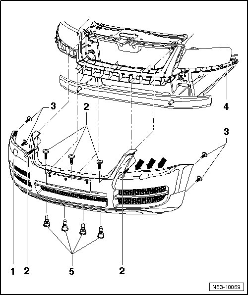
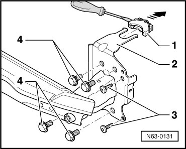
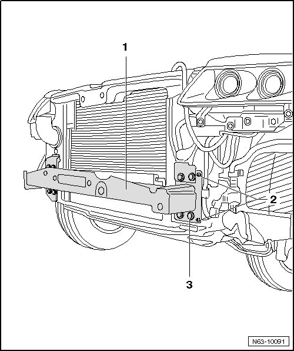

Front Bumper, through 10.2006
Front Bumper, through 10.2006
--> [ Bumper Cover ]
--> [ Bumper Carrier ]
--> [ Bumper Carrier with Cable Winch Mount ]
Bumper Cover
• Due to model variations, small deviations must be considered during removal and installation.
Removing

- Remove radiator grille, refer to --> [ Radiator Grille, through 10.2006 ] Radiator Grille.
- Loosen the front of the wheel housing liner. Refer to --> [ Front Wheel Housing Liner Assembly Overview ] Service and Repair
- Remove the bolts - 2 -.
- Remove bolts - 5 - from below.
- Remove bolts - 3 - in area of wheel housing liner.
- Release the retaining tabs under the left and right headlights - arrows -.
- With the assistance of a second technician, remove cover out of guide trims - 4 - parallel to vehicle.
- Depending on vehicle equipment, disconnect the wiring harnesses and hoses from the electrical components.
Installation
To install, perform the steps used for removal in reverse order.
Bumper Carrier
Removing
- Remove bumper, refer to --> [ Bumper Cover ]
- Remove bolts - 3 - and - 4 - at left and right from bumper carrier - 2 -.

- Release the clips - 1 - on left and right from engine compartment using screwdriver and remove in - direction of arrow -.
- Pull the bumper carrier - 2 - toward the front.
Installation
To install, perform the steps used for removal in reverse order.
Bumper Carrier with Cable Winch Mount
• Installed only on vehicles through 10.2006
• Further information on bumper carrier with cable winch mount can be obtained via Volkswagen Technical Helpline
Removing

- Remove cable winch.
- Remove left and right signal horns.
- Disengage clips for bumper carrier on left and right sides as described in the chapter for removing and installing bumper carrier. Refer to --> [ Bumper Carrier ].
- Remove bolts - 2 - and - 3 - at left and right from bumper carrier - 1 -.
Installation
Installation of bumper carrier - 1 - is the same in reverse order.
Tightening specification for bolts - 2 -: 1.5 Nm.
Tightening specification for bolts - 3 -: 65 Nm.